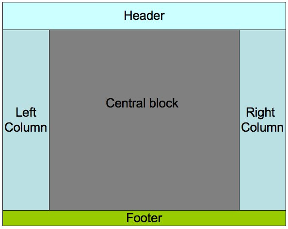

HW1
My page has the same appearance in Chrome, Edge, IE, Firefox and Safari. You can check the display under each browser by clicking the name.
This page has passed the validation, you can check the result by clicking the following pictures.

| Homepage | Homework List | Contact Me |
My page has the same appearance in Chrome, Edge, IE, Firefox and Safari. You can check the display under each browser by clicking the name.
This page has passed the validation, you can check the result by clicking the following pictures.
HW1:
Implement a page layout like:

Use CSS and DIV.
1. The left column and the right column must be of the same width, which could be fixed.
2. The right column always floats to the right.
The left column and the right column must be of the same height no matter what do they contain.
3. Inline style, Internal style sheet and External style sheet must all be used in the homework.
Your performance of designing the layout will be evaluated in Firefox 3.5. You will receive a bonus if you design layout that has the same appearance in IE6, IE7+, Opera, Safari, etc. and mention this effort in your homework. Also, try to pass both the W3C Markup Validation and the W3C CSS Validation, then place "valid" icon(s) on your web pages. The icons can be found on the page showing you passed validation.
HW2:
Study the "Survey" example in the text book carefully. Try it first.
Implement a little "Questionare" using Perl. Information to be collected include:
1. Name.
2. Age.
3. Gender.
4. E_mail address.
In addition to the Submit button, a Query button is provided for the user to see all data items have been collected. User should also be able to delete selected Items.
Answer:
I've met all the requirements of the homework in this page:
1. The requirements of homework 1 are properly displayed in this page. Details are shown in the left column.
2. The link to the homework 2 is in the right comlumn.
Check my answer to homework 2 through this Questionaire.
In the questionaire page, you can add a new record by clicking the Submit button, query all the data by clicking the Query button. You can delete the unnecessary information in the query page.
In order to accomplish the task, Perl scripts and JavaScript are used.